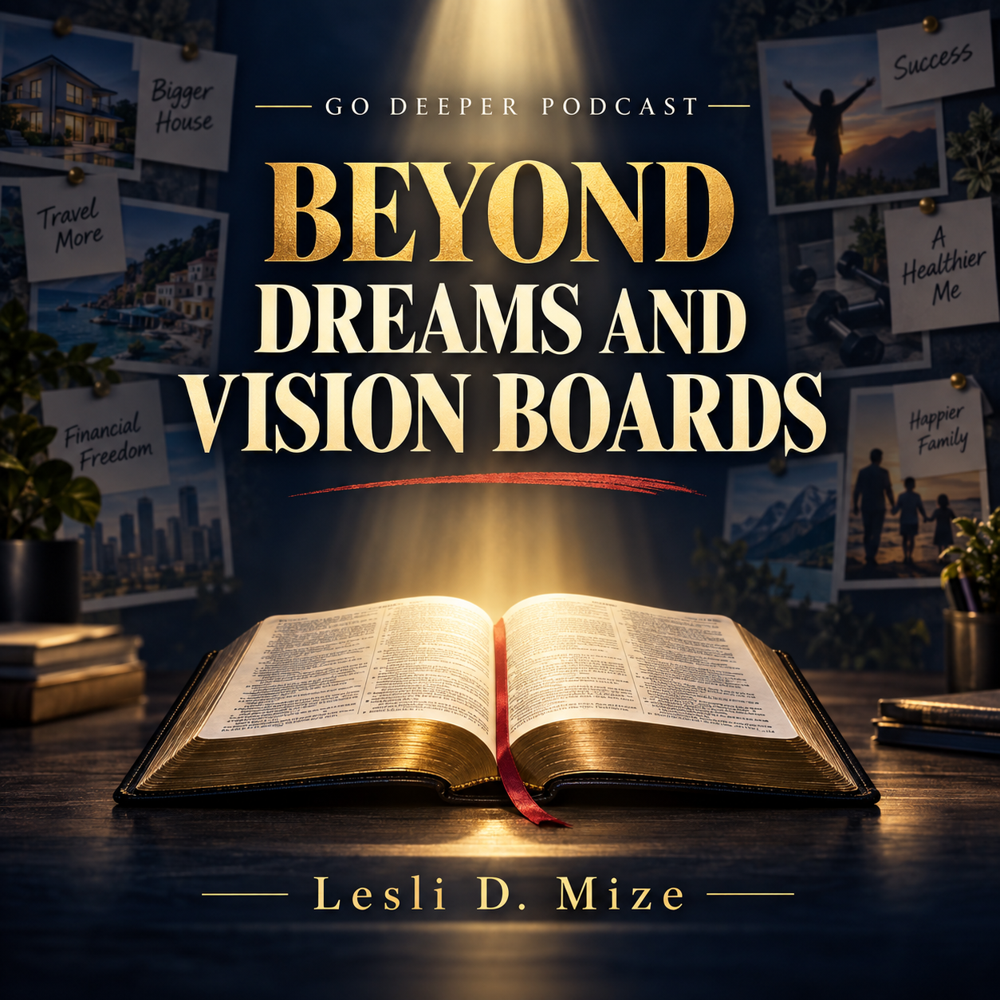

Companion Teaching • Go Deeper Podcast
Beyond Dreams and Vision Boards
What Proverbs 29:18 Really Means

Listen to the Go Deeper Podcast
Go beyond personal dreams and human ambition to examine prophetic revelation, biblical restraint, correction, discipline, humility, and self-control through Proverbs 29:18.
This episode accompanies “When People Run Wild” and takes a closer look at why God’s prophetic revelation still matters—and why faithful obedience is more enduring than dreams or personal vision boards.